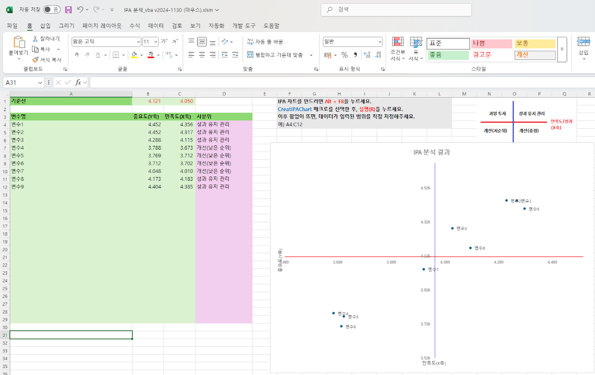

IPA 분석은 평균 비교의 변형으로, 평균값을 중심으로 4가지 영역으로 구분하여 각 영역별 특징에 맞는 해석을 제공합니다. AI가 작성해준 VBA 스크립트를 활용해 만든 엑셀 기반 도구입니다.
📋 도구 특징
- 데이터 입력 시 자동으로 4분면 차트 생성
- 영역별(Keep up the good work, Concentrate here 등) 자동 분류
- 설치 없이 엑셀 매크로(VBA)만으로 구동

IPA 분석 결과 차트 예시